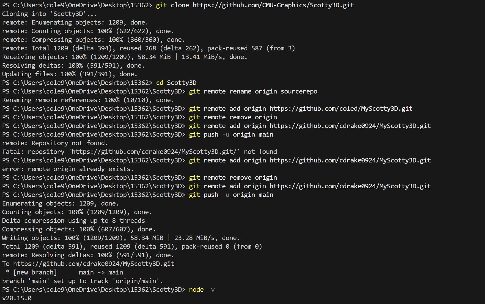
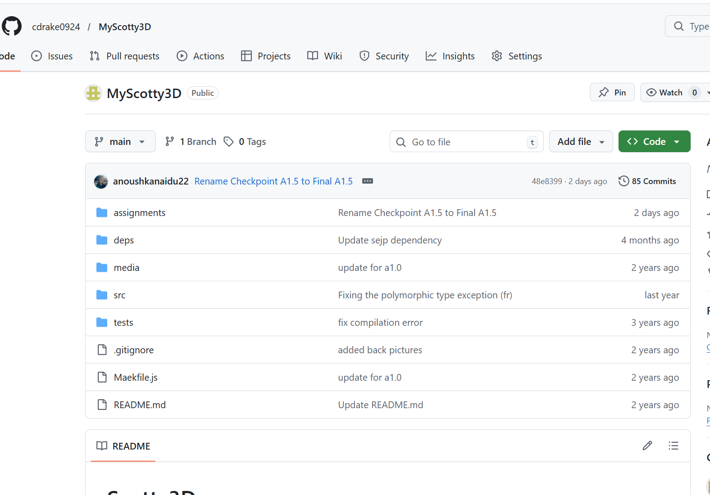
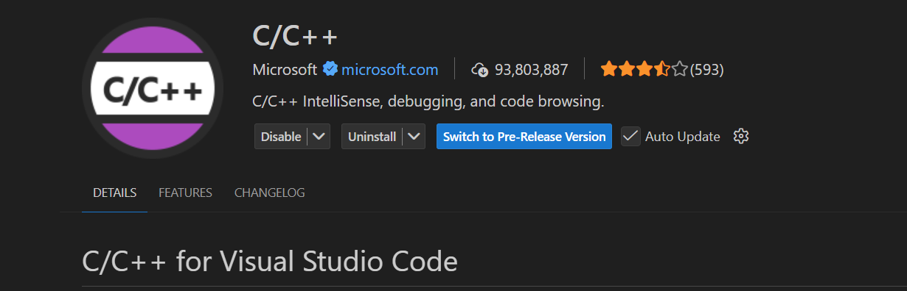
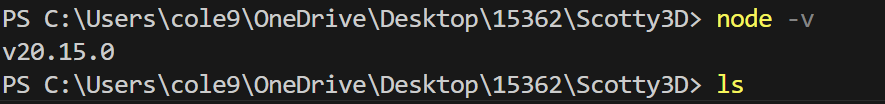
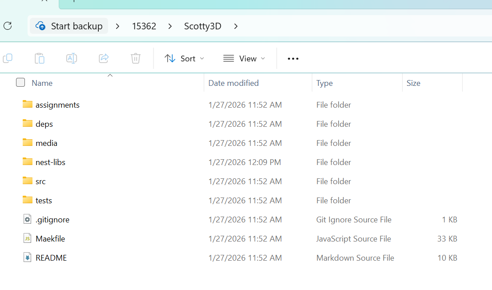
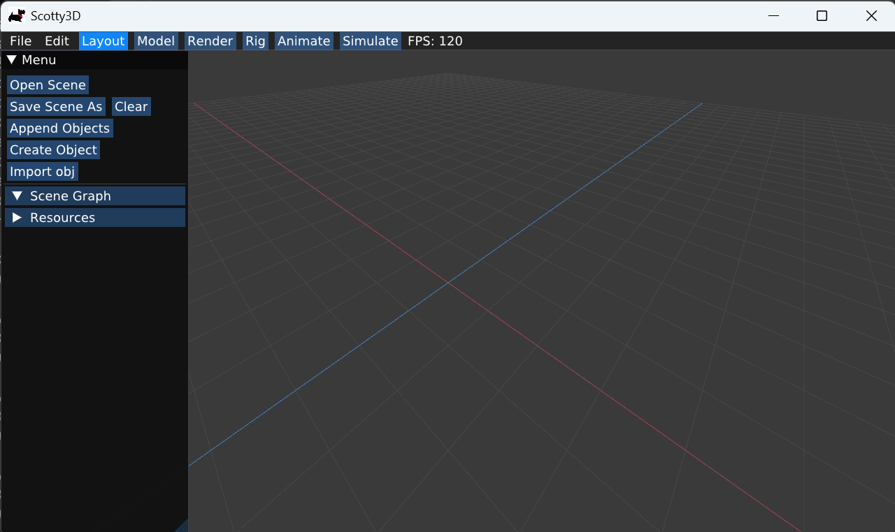
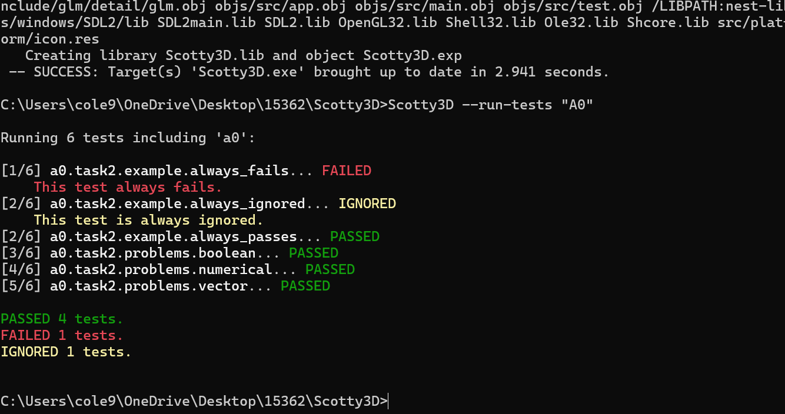

**Assignment 0 Report**
AndrewID: XXXX
(##) About this template
* You can view your writeup by opening it in a browser - right click this file and open with your browser of choice.
* Replace reference images with your own screenshots or renders when applicable.
* Include descriptions of any encountered problems and the time you spent on each task.
(##) A0T1
Step 1: Clone

or

Step 2: General Setup
Visual Studio:

Node:

Nest-libs:

Step 3: Build and Run


(##) A0T2
Your completion of this task will be graded based on your `test.a0.task2.problems.cpp` file and your responses to the below questions.
For each of the problems you solved in task 2, characterise the bug in your own words and explain one other scenario that may cause this
type of bug.
Problem 1: String needs to be std::string, there needs to be a semi-colon, std::cour needs to be std::cout
Problem 2: All the ints needs to be doubles or else it will truncate
Problem 3: The syntax is *(--vector.end())
Problem 4: It loops through the final vector 400 times, instead loop through one vector and check if that value is in both of the other vectors
(##) A0T3
You do not need any screenshots for this task. Your completion will be graded based on your `src` submission.
(##) GenAI Use
Which model(s) did you use (e.g., ChatGPT-4, Claude-2, etc.)?
Google Gemnini
For what purpose(s) did you use GenAI (e.g., brainstorming, code generation, debugging, etc.)?
This is my first time using C++ so I needed help for the syntax especially how to print in a loop for problem 2
What was it good at? What was it bad at?
It was good at something simple like that. I was having a rough time compiling and Gemini could not figure out the problem.
(##) Feedback
Use this section to provide feedback about the assignment.